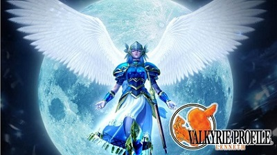

Pokémon GO! ya está liberando de forma oficial las formas Alola de sus cristuras, comenzando con Exeggutor
El día de ayer, entre tantas noticias y emociones los jugadores fieles de Pokemon GO! se dieron cuenta de...Leer más
El día de ayer, entre tantas noticias y emociones los jugadores fieles de Pokemon GO! se dieron cuenta de...Leer más

La noche de ayer estuvo llena de sorpresas para los pokéfnas, hubo tantos anuncios emocionantes que no terminaríamos de...Leer más
Sabemos que el pasado mes de Octubre, en 2017, Paamount adquirió los derechos para la película "Sonic: The Hedgehog",...Leer más

En la noche de hoy Nintendo y The Pokémon Company llevaron a cabo un evento que llevó por nombre...
Leer más

Square Enix anunció que VALKYRIE PROFILE: Lenneth, el juego clásico de rol y primera entrega en la serie de...Leer más